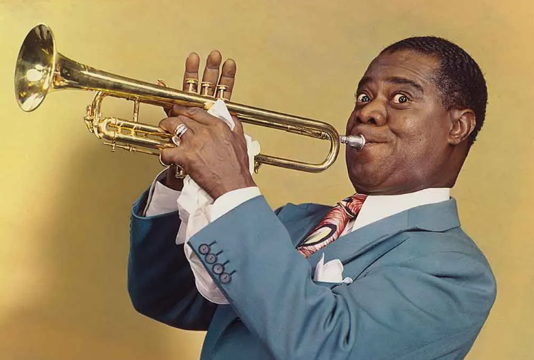
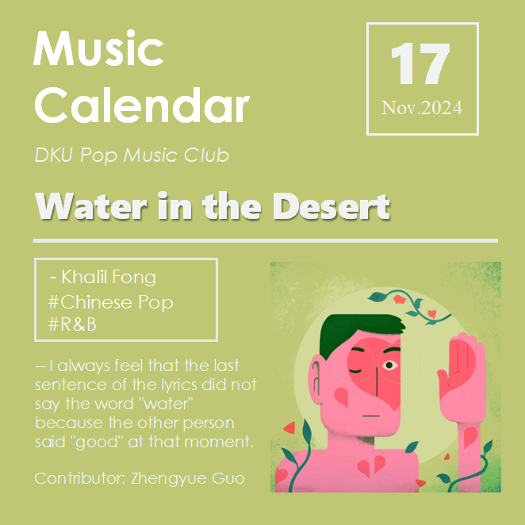
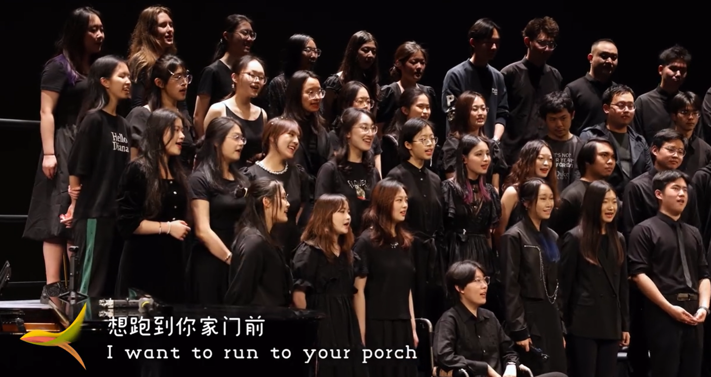

The Music Project
My music journey:
From 2009: Learning dulcimer; joining school bands and Shanghai Chinese Student's Orchestra.
From 2016: Learning trumpet; joining school bands.
From 2021: Starting singing as a hobby; joining DKU chorus and Infinity band.
I have been playing dulcimer in many bands, especially with the CWI Children's Palace.

Started learning the trumpet in 2016, performing with various school bands. My favorite trumpet player:

I recently created a music calendar for the pop music club. If you're interested, please subscribe to "DKU Pop Music" on WeChat!
Currently performing with Infinity Band, and the folk music Band expanding my musical interests further.

Joined the DKU chorus in 2024, exploring choral singing as a new passion.
My passion for music stays strong; I love exploring all kinds of music.
Music, just playing!